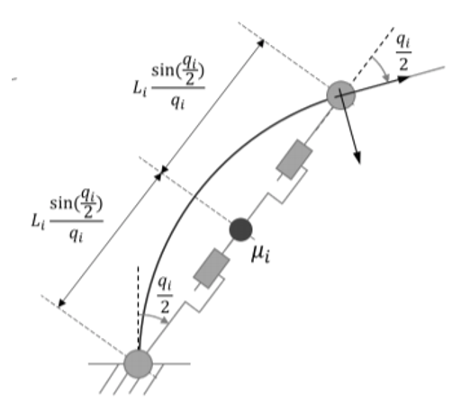

Design
Soft grippers have been attracting the attention of many researchers because of their real life applications in delivering many tasks requiring soft touch and handling. Their human centric design makes them even more compelling to study in greater detail. One of the applications of soft grippers is in the design of prostheses - bionic arms, hands, legs, etc.
Soft grippers are difficult to model due to having infinite degrees of freedom but research has shown that these can be reasonably modelled as a combination of 3 or 4 rigid manipulators - RPPR (revolute, prismatic, prismatic, revolute) or RPR (revolute, prismatic, revolute).
For a human centric device, the design criteria must include the feel it gives to the user of the product. The slower response curve of the gripper gives an opportunity to model the human centric response; it’s not a shortcoming. For the purpose of creating a dynamics model of the soft finger, we are mainly concerned with how well the model can predict the movement of the finger in response to varying PWM signals, as this is the main factor which determines how well a model generated feed-forward term can assist in control and trajectory tracking. In particular, we want our finger to track a sinusoidal trajectory with minimal error. In terms of modeling, the main choices to make were between modeling the DragonSkin-30 or EcoFlex-30 fingers, the function used for relating flex measurements and angle values, simple constant stiffness or hyperelastic model for soft gripper rubber, and manipulator model as RPPR or RPR rigid body.
After initial discussions with Valmik - the supervisor for our project - we decided to use the DragonSkin-30 finger as a first step using the RPPR model with a constant stiffness model. That is, we consider our soft finger to be a manipulator with revolute joints at the base and tip and two prismatic joints in between, with the center of mass of the finger expected to be at the intersection of the prismatic joints. Rather than viewing the stiffness of our finger as varying over different bend angles, we instead model it as a constant along with innate damping. We also view the modeled torque applied at the base of the manipulator related through a second order differential equation to the PWM applied to the pump. This gives us 4 values to find via non-linear regression: two for the differential equation relating finger position and torque (K, D), and two for the differential equation relating torque and input PWM (α, γ). Although using a hyperelastic (variable) model of the stiffness K would likely yield a more accurate dynamic model of the finger, we prioritized evaluating the simpler model first.
\begin{equation} \sigma(\lambda) = \frac{\lambda^{4} - 1}{\lambda^{2}} \bigg{(} 2C_{1} + 4C_{2} \big{(} \lambda - \frac{1}{\lambda} \big{)}^{2} \bigg{)} \end{equation} \begin{equation} \lambda = \frac{q}{\sin{(q)}} \end{equation} \begin{equation} K = \frac{\sigma}{\lambda} \end{equation} \begin{equation} \tau = \frac{\alpha}{(\gamma s + 1)^{2}} u \end{equation} \begin{equation} \gamma^{2} \ddot{\tau} + 2 \gamma \dot{\tau} + \tau = \alpha u \end{equation}
 As we thought it would be better to predict angle of our finger with data from a flex sensor rather than completely relying on vision for the main reasons of being able to update measurements from the flex sensor faster than from a camera and it being more feasible to not require a camera to track the position of the finger, one of our main tasks was to find a model relationship between flex output and bend angle. We planned on fitting a first or second order polynomial, as this seemed like a reasonable relationship and was also advised by Valmik.
After coming up with some model bend angle and flex values and collecting a good amount of step response data to varying PWM values, the next step would be to find the system parameters using the nonlinear least squares methods, employing the ‘trust region reflective’ algorithm in MATLAB. We were expecting to get similar values of K (stiffness), D (damping factor), α (input gain) and γ (second order damping factor) for the entire range of the data but we got different sets of data for varying PWM values. The suggested strategy which we planned to follow was to observe steady state data to find initial values for K and α, and then use those to begin the overall parameter search.
We decided the best approach towards making the controller would be to first start with designing a model-free PID controller which we would then convert to controller still operating on PID but incorporating a model-generated feedforward term. Although we wouldn’t be using a model-free controller in the final implementation because it would defeat the entire purpose of attempting to model the finger as a rigid manipulator (and probably not work well), working on one would build the foundations of our finger controller to while the dynamics model was still being worked on and gives us a benchmark for which to compare the relative performance of the model-based controller. With the main purpose of the controller to be that of trajectory tracking, we thought of what the best ways for a user to actually input a custom trajectory would be. We decided the most flexible approach was to have the user input in a set of waypoints and corresponding desired times to reach those points, and the trajectory could be linearly interpolated between them. Even with this discretization of what may be an intended continuous path, we decided that with enough points, even a simple linear interpolation between points will be continuous enough. For creating our sinusoidal trajectory, we expected sampling our desired sinusoid at a rate of 10Hz to be adequate.
Of course, we can’t do any modeling without having reliable data. With most of the data collection setup pre-established, there was already much ground to start with (starter code already had an albeit failing vision algorithm to track the location of the finger and basic data collection script). The main tasks would be to fix the failed vision and streamline the process of data collection and distribution to MATLAB and Python analysis scripts. We had been given a fixed vision algorithm that needed to replace the one currently in place, and after going through the main shortcomings of the earlier vision algorithm and the improvements in the new one, we decided that the new algorithm would probably fix the currently in place errors. The new algorithm was still a four point homography that relied on 2D pixel measurements from the video stream like its predecessor, so we also wanted to with using depth camera data as an alternative means of position tracking. In addition, we thought the best way to go about data collection would be to improve upon the starter data collection script to make something that would allow a user lots of customization over how many trials of different PWM, how many repeat trials, how long to hold each trial, etc. As specified in the original lab, it’s the step response data that should be used for analysis. Thus, we aimed to have our data collection setup be highly functional in taking data of varied step responses. Although step response data can be immensely useful, we realized that it’s also important to consider system responses to other types of input. However, we decided to just follow the recommendation to stick with step response analysis, as this would likely be the most feasible for our project.